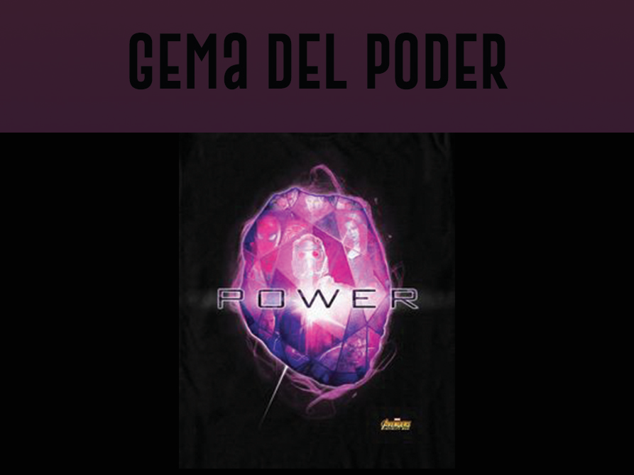
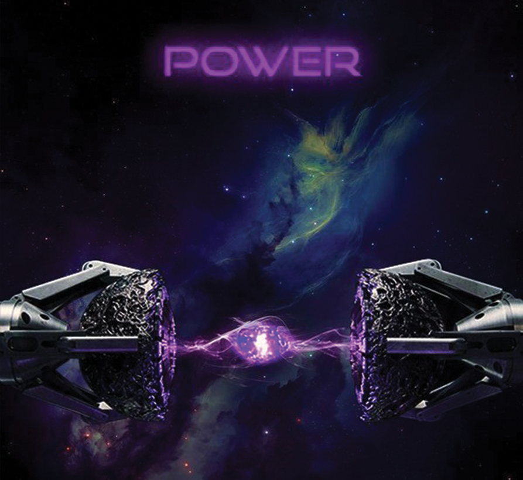

|  |
Color: morado Unidad de contención original: Orbe El Orbe fué la caja de protección de la Gema de Poder púrpura. La gema fue una fuente de energía increíble, que, cuando se usaba a su capacidad máxima, tenía energía suficiente para destruir un planeta entero, y si su usuario tenía habilidades superhumanas la Gema las potenciaba enormemente. Esta gema fue buscada por Thanos, quien encargó a Ronan buscarla en el planeta muerto de Morag, a cambio de ayudarlo a destruir de Xandar. Peter Quill consiguió la gema en su lugar y estaba dispuesto a vendérsela a Taneleer Tivan hasta que su poder destructivo se desencadenó en Knowhere. Poco después, Ronan logró conseguirla y aprovechar su energía con la intención de destruir toda la vida en Xandar y matar a Thanos. Peter Quill y los Guardianes de la Galaxia fueron capaces de arrebatarle la gema a Ronan y colectivamente aprovechar su poder para destruirlo. Más adelante, la Gema fue entregada a la Nova Prime Irani Rael para su custodia en Xandar. Sin embargo, Thanos acabaría con los Nova Corps en un intento exitoso de adquirir la Gema del Poder y luego la insertaría en su Guantelete del Infinito, para después poder chasquear sus dedos. Apareció por primera vez en Guardianes de la galaxia, cuando Peter Quill la robo para venderla. |
|  |